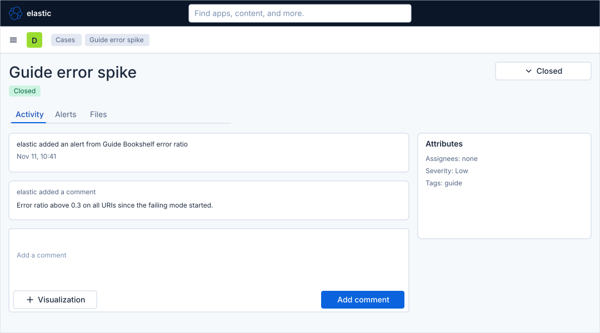
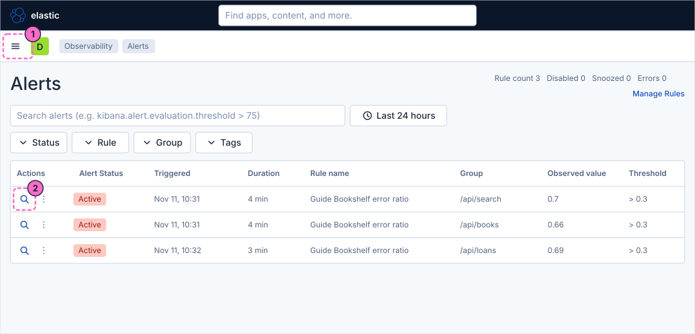
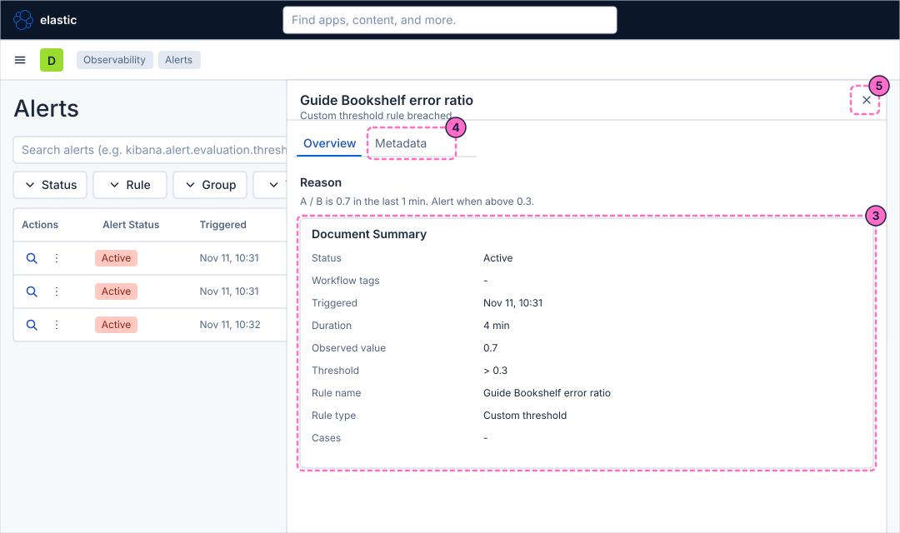
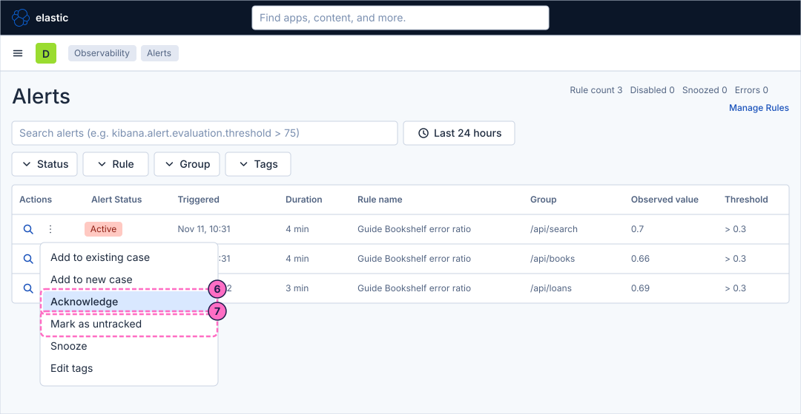
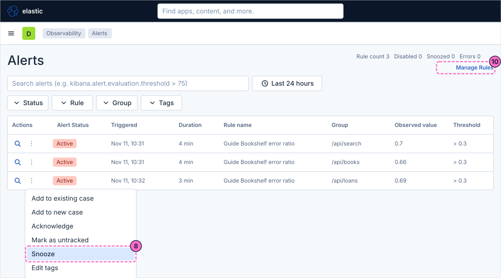
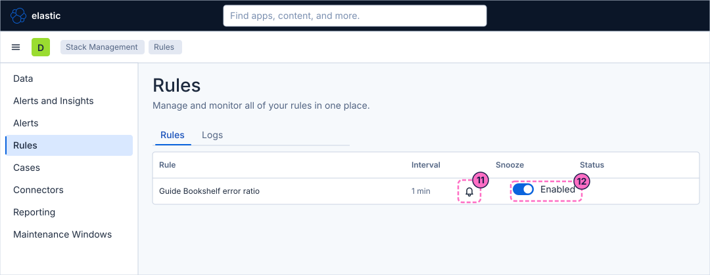
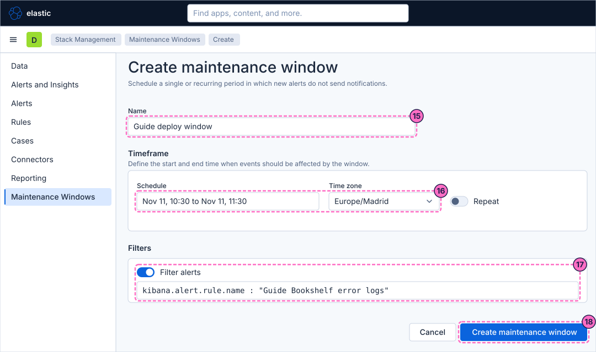
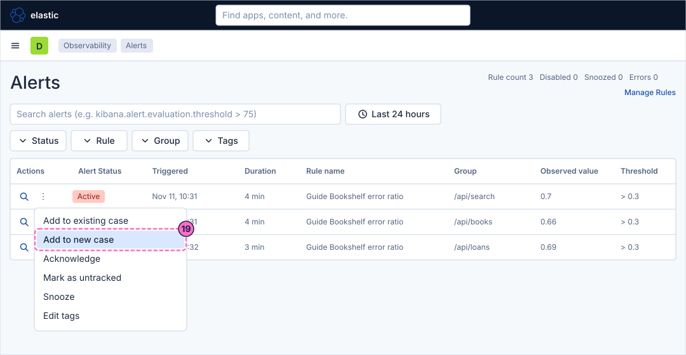
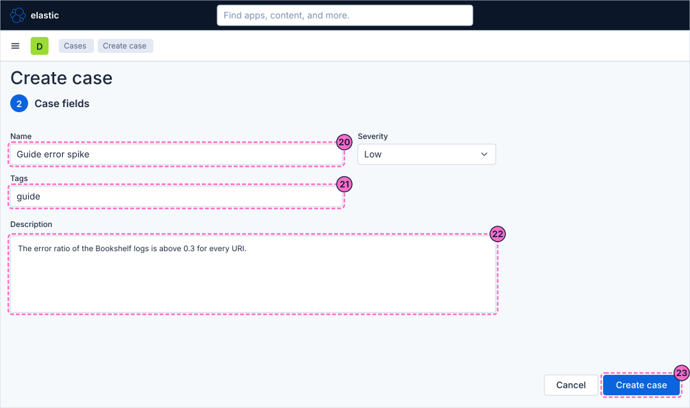
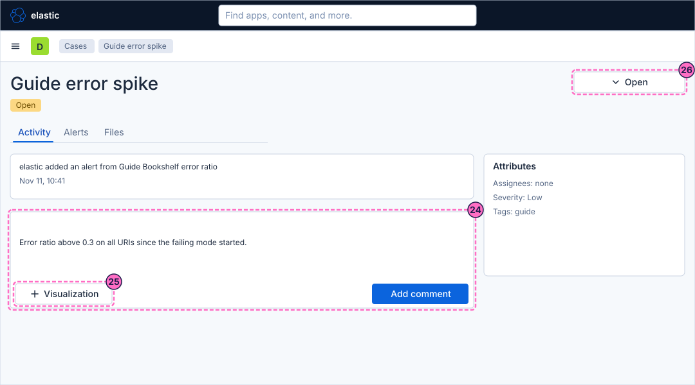

Kibana Guide: Manage Alerts, Maintenance Windows and Cases
|
This content was generated with the assistance of AI and should be verified against the official documentation before being relied on in production. |
Checked on 2026-11-11 against Kibana 9.5.x.
What you build
You work on the alerts the Bookshelf rules produce. You read an alert in the Observability Alerts page, acknowledge one alert, mark another as untracked and snooze a third, then
snooze and disable a rule. You schedule a maintenance window that suppresses the notifications of one rule, and you open a case from an alert, add a comment and a
visualization to it and close it. The result is a closed case named Guide error spike that holds the alert and its comment.

Before you start
-
Start the Kibana profile of the hands-on lab and wait about a minute:
cd lab docker compose --profile kibana up -d -
Open http://localhost:5601 and sign in as
elasticwith the passwordlab-elastic-password. When Kibana opens its full-screen welcome page, click Explore on my own. -
Do the previous guide, Observability rules and SLOs. This guide uses its rule
Guide Bookshelf error ratio, which keeps one alert for each URI. The maintenance window uses the ruleGuide Bookshelf error logsand its webhook connector from Create a rule with a connector. -
Alerts need failing traffic. Force errors and wait two or three minutes, until the Alerts page lists at least two active alerts:
curl -X POST localhost:8090/mode/failing -
Licence: alert actions and cases need the basic features of the Observability solution. Maintenance windows need a Platinum licence, which the trial licence of the lab includes.
-
Not run end to end: the rules list controls, the case page after the case is created, the visualization control of a case and the way a case is closed were not opened in the lab. The alert menu, the alert snooze panel, the Maintenance Windows pages and the Create case form were replayed. The steps name the control and leave the exact layout to your screen. The labels of the Alerts table and of the alert details come from the lab.
-
The figures are drawings of the Kibana 9.5 user interface, not screenshots, so small details can differ from your screen. A highlighted box with a number marks the control of the step with the same number.
Steps
Three screens are used: the Observability Alerts page, the rules list of Stack Management and the Maintenance Windows page. Kibana 9.5 has no Mute action; the actions of an alert are Acknowledge, Mark as untracked and Snooze. The page Alert Lifecycle, Snooze & Maintenance Windows explains how they differ.
Read the Alerts table
-
Click the menu button (Toggle primary navigation) at the left of the second bar and, under Observability, click Alerts. The page shows the counters Rule count, Disabled, Snoozed and Errors at the top right, and a table with the alerts of the last 24 hours.
-
In the first row, click the Alert details icon (the expand icon) under Actions.

-
In the flyout, read the Reason and the Document Summary table: Status, Triggered, Duration, Observed value, Threshold, Rule name, Rule type and Cases.
-
Click the tab Metadata to see the fields of the alert document.
-
Close the flyout with the close button at its top right.

Acknowledge and untrack alerts
-
In the first row, click More actions (the three dots under Actions) and then Acknowledge. The menu lists Add to existing case, Add to new case, View rule details, View alert details, Acknowledge, Mark as untracked, Snooze and Edit tags. The alert stays active and gets an acknowledged badge, which tells the team that someone is looking at it.
-
In the second row, click More actions and then Mark as untracked. Kibana stops tracking that alert: its actions stop, its status never changes again, and the choice cannot be reverted for that alert.

Snooze and disable a rule
-
In the third row, click More actions and then Snooze. Snoozing one alert keeps the rule and its other alerts running.
-
In the panel Snooze, which has the tabs Quick Snooze and Condition based, answer "How long should this alert be snoozed?" with 1h (the other choices are Indefinitely, 8h, 24h and Custom) and click Snooze alert.
-
Click Manage Rules at the top right of the Alerts page.

-
In the rules list, find
Guide Bookshelf error ratioand use its snooze control to snooze the rule for a short period. A snoozed rule keeps running and creating alerts, but they send no actions. -
Turn the Enabled switch of the rule off to disable it. A disabled rule stops running, and the Disabled counter of the Alerts page goes up. Turn it on again when you finish the guide.

Create a maintenance window
A maintenance window suppresses the notifications of the alerts it matches for a period. The alerts are still created. The window below is aimed at the rule Guide Bookshelf error logs, the rule with the webhook,
so that you can see the effect on the webhook receiver.
-
Open Stack Management from the menu and, in the left menu under Alerts and Insights, click Maintenance Windows.
-
Click Create a maintenance window (on a page that already lists windows the button is Create window). The page Create maintenance window has the sections Name, Timeframe and Filters.
-
In Name, type
Guide deploy window. -
In Timeframe, the Schedule starts now and ends in 30 minutes; move the end 30 minutes later so that it lasts one hour, check the Time zone, and leave Repeat off.
-
In Filters, turn on Filter alerts and type the KQL filter below.
kibana.alert.rule.name : "Guide Bookshelf error logs" -
Click Create maintenance window.

Open a case from an alert
-
Go back to the Alerts page. In a row, click More actions and then Add to new case.

-
In the form that opens, which has the fields of the Create case page, type the Name
Guide error spike. -
In Tags, type
guide. -
In Description, type
The error ratio of the Bookshelf logs is above 0.3 for every URI.and keep the Severity Low. -
Click Create case.

Add a comment and a visualization, and close the case
The case page was not opened in the lab, so the figure draws it generically.
-
Open the case if Kibana did not open it. On the tab Activity, type this comment in the comment box and click the button that adds it.
Error ratio above 0.3 on all URIs since the failing mode started. -
Add a visualization to the case with its Visualization control, for example a Lens bar chart of the count of records by
severity_text. Use an absolute time range, so that the chart keeps showing the incident later. -
Use the status control of the case, which shows Open, to close the case.

Check the result
-
On the Alerts page, the first alert carries the acknowledged badge, the second alert is untracked and no longer changes, and the Snoozed and Disabled counters at the top right count your snoozed and disabled rules.
-
Open the details of the alert you attached to the case: the row Cases of the Document Summary names
Guide error spike. -
In Cases, the case
Guide error spikeis listed as closed, with the alert under its attachments and your comment in its activity feed. -
To see the maintenance window work, read the webhook receiver before and after a failing run. During the window the rule
Guide Bookshelf error logsstill turns active, but no new delivery should arrive:curl -s localhost:8081Without the window the same rule sends a delivery about three seconds after it turns active. This effect was not run end to end in the lab.
Restore normal traffic afterwards:
curl -X POST localhost:8090/mode/normalVariations
-
Add the filter
kibana.alert.rule.name : "Guide*"to the maintenance window to cover every rule of these guides, or turn on Repeat for a weekly window. -
Use Add to existing case instead of Add to new case to collect several alerts in one case.
-
Snooze the alert until its severity changes instead of for a period when the rule has a warning threshold; the reference page on the alert lifecycle describes the conditions.
What can go wrong
| Symptom | Cause | Fix |
|---|---|---|
The Alerts table is empty |
The time picker covers Last 24 hours but the lab is in normal mode and the rules have not fired, or the Status filter is |
Send |
Mark as untracked cannot be undone |
An untracked alert is closed for good: its status never changes again. |
Use Acknowledge or Snooze when you only want to calm an alert. |
The webhook still receives a delivery during the maintenance window |
The alert started before the window, or the filter does not match the rule name, or the window has not started. |
Check the schedule and the time zone, and compare the filter with the Rule name in the Document Summary of the alert. |
The window page is not found in Stack Management |
The licence is not Platinum or trial. |
Check the licence with |
The case cannot be created |
The Name or Description is empty. |
Fill both fields; they are required. |
Clean up
Turn the rule Guide Bookshelf error ratio on again and remove its snooze, so that the following guides see its alerts. Delete the maintenance window Guide deploy window on the Maintenance Windows page when it is no longer needed. Keep the case if you
want to look at it again, or delete it in Cases. Stopping the profile with docker compose --profile kibana down -v deletes everything the lab stores.
Where to go next
-
Previous guide: Observability rules and SLOs.
-
Next guide: Anomaly detection and AIOps, which finds unusual behaviour and explains log spikes.
-
Reference: Alert Lifecycle, Snooze & Maintenance Windows covers statuses, snooze and windows in full, and Cases covers attachments, templates and the Cases action.